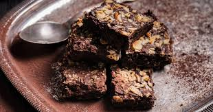
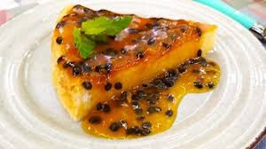
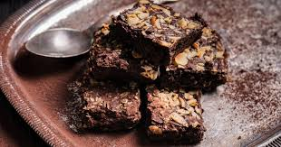
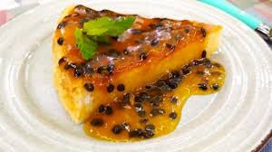

Sobremesas
Para finalizar sua refeição com chave de ouro, nossas sobremesas oferecem uma deliciosa combinação de sabor e bem-estar. Pensadas para complementar nossa proposta de alimentação saudável, cada opção é feita com ingredientes frescos, naturais e nutritivos, a doçura vem das frutas frescas, de tâmaras, mel ou outros adoçantes naturais, garantindo uma experiência leve e prazerosa. Nossas sobremesas são preparadas com carinho e respeito ao seu corpo, proporcionando momentos de prazer sem culpa.
Escolha a sua favorita e sinta o sabor da saúde até o último pedaço
 2
3
4
2
3
4